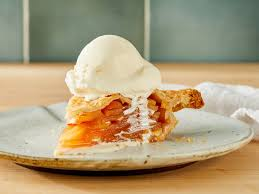

Яблуневий пиріг

Посилання на оригінальне зображення пирогаІнгредієнти
- Пластівці вівсяні: 150 г
- Яблуко: 4 шт
- Родзинки: 30 г
- Мед: 10 г
- Мигдалеві пластівці: 10 г
Приготування
- Пластівці подрібнити, 1 яблуко вимити та очистити від шкірки. Перемішати яблуко та пластівці.
- Додати яйце. Вимішати тісто.
- Форму змастити олією. Викласти тісто.
- 3 яблука вимити і очистити. Тушкувати з водою доки не помʼякнуть.
- Викласти яблука до миски, додати мед. Перемішати.
- Яблука з медом до тіста, розподілити рівномірно. Посипати пластівцями.
- Духовка 180 градусів, пекти 30 хвилин.